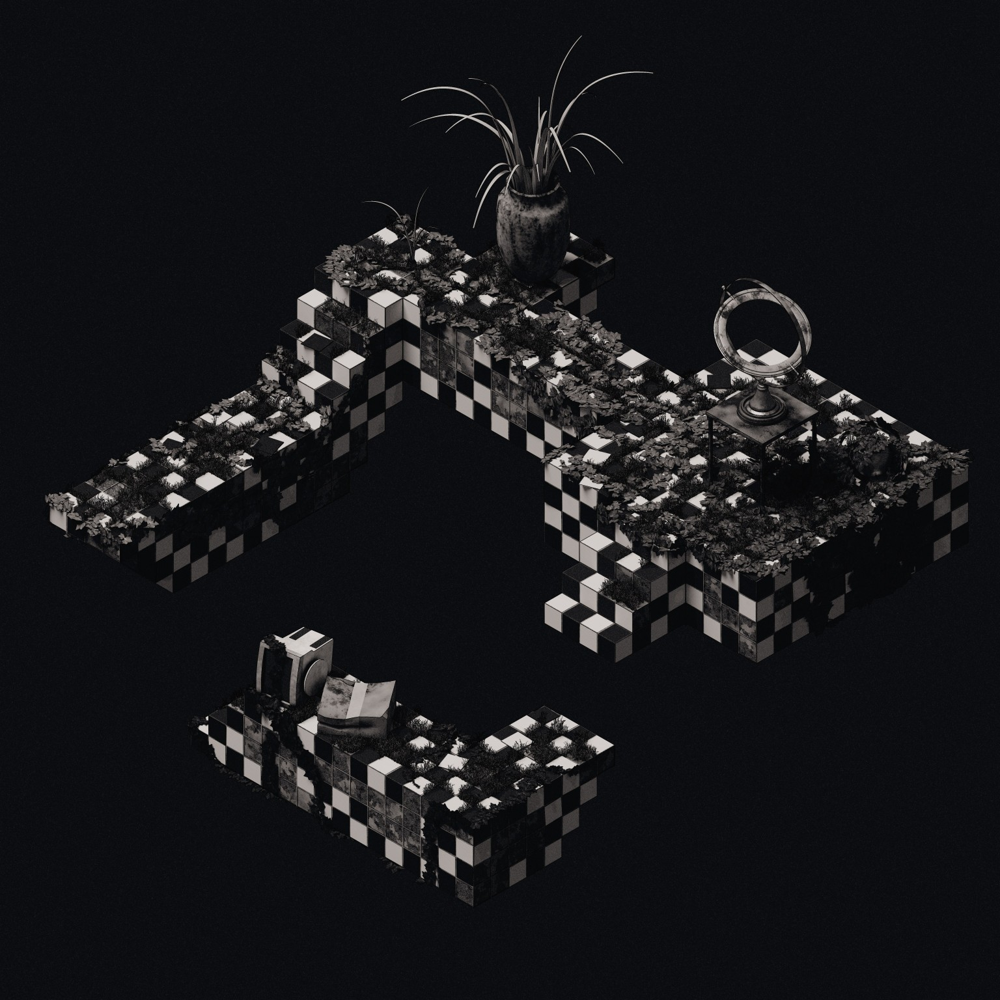

'Untitled Stairway II' is an exercise in visual storytelling, following a 4-panel comic style. this is all made entirely within Blender, save for combining the four panels at the end using GIMP.
i developed the graphite art style over the course of previous projects, and it consists of materials with special AOV passthrough properties, careful lighting, and a complex compositing setup that takes into account rendered colour, normals, ambient occlusion, and the AOV passthrough to produce the final output.
i challenged myself with this project to experiment with ways different elements might decay: the cardboard box the TV is sitting on crumples; the orrery gets broken; tiles get dislodged; meanwhile ivy, grass, and the spider-plant thrive. i made use of shape keys/blend shapes for the spider-plant, tiles, and cardboard box.
the ivy is procedurally grown using a script I wrote in python for Blender (in fact, the Unity script i wrote for A Lonely Greenhouse is based heavily on this script), and I then used geometry nodes and keyframe animation across 4 frames to make it look as if the ivy grows over time.
mostly this project was practice turning a simple starting scene into a complex, 'well-used' feeling endpoint, by iterating on the scene and concept.
 before and after